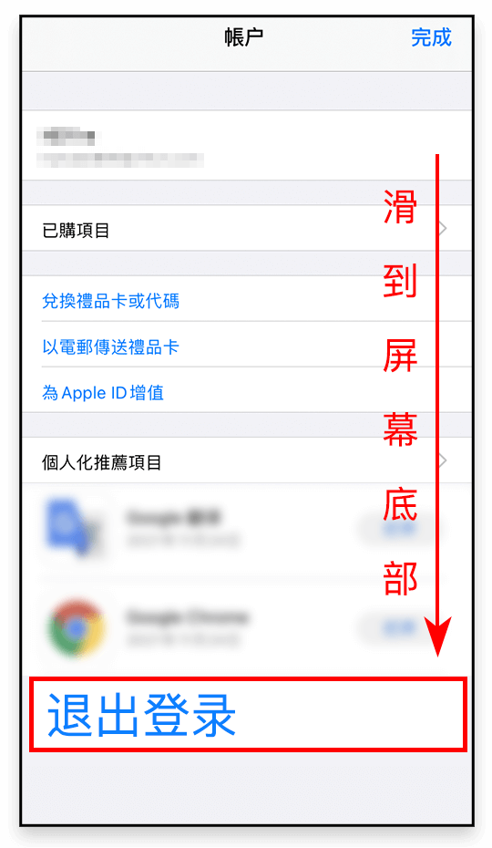

第一步：
进入 Apple 官网 <https://appleid.apple.com>， 点击 <登录> ，输入自己的 Apple ID；
第二步：
登录成功后在 <右上角下拉菜单> 中选择 <个人信息>；
第三步：
在个人信息页面选择 <国家或地区>；
第五步：
此时您已经进入到付款方式页面，请按照下述描述填写相关信息：
- 国家或地区：<香港>
- 付款方式：<无>
- 账单寄送地址：<姓氏、名字、街道地址随意填写>
- 电话号码：<852+任意8位数字>
- 送货地址：<姓氏、名字、街道地址随意填写>，国家或地区选择 <香港>
最后选择更新即可。
若付款方式无法选择“无”，请使用其他方式下载>>第六步：
打开 App Store  ，点击 <右上角图标>；
，点击 <右上角图标>；
第七步：
选择 <退出登录>，记得一定要滑倒页面底部才能看到；

第八步：

在 App Store 中重新登录您的 <AppleID> ，这里记得选择 <登录> ，不要点击右上角的完成；

温馨提示
下载完成赛盾VPN后，您也可以随时把 Apple ID 的地区改回 <中国大陆> ，当然您也可以在香港商店中下载各种海外热门应用，赛盾全部都能支持！